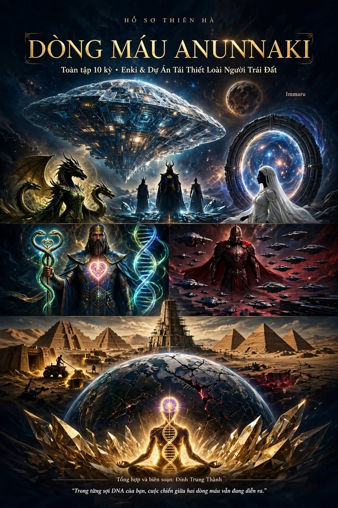
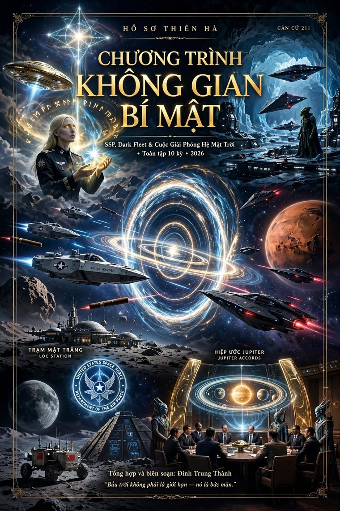
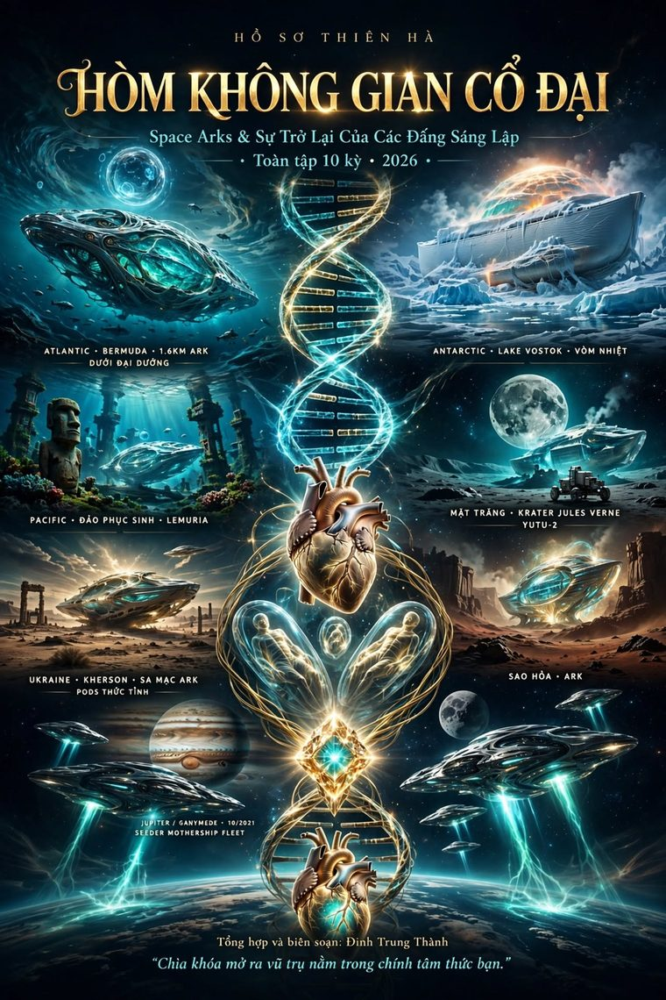

Thư viện chuyên đề miễn phí
Hồ Sơ Thiên Hà
Từ Lăng Kính Lyra và các Đấng Sáng Lập, tới dòng máu Anunnaki, những nền văn minh lòng đất, chương trình không gian bí mật, hòm không gian cổ đại, hồ sơ các chủng tộc — và cuối cùng là cẩm nang tâm thức vũ trụ. 10 chuyên đề, 100 kỳ, đọc theo đúng mạch.

10 chuyên đề
Mỗi chuyên đề là một tuyến truyện liền mạch. Đọc từ kỳ đầu tới kỳ cuối, hoặc nhảy vào bất kỳ chủ đề nào bạn quan tâm.

Tiền Sử Thiên Hà
Khởi nguyên Vũ trụ, Lăng Kính Lyra, các Đấng Sáng Lập và cuộc Đại Di Cư vĩ đại.
10 kỳ →
Hành Trình Thiên Hà
Các nền văn minh thiên hà, Orion, Atlantis — Lemuria và cuộc chiến di truyền.
10 kỳ →
Dòng Máu Anunnaki
Nibiru, Enki — Enlil, di sản 12 chuỗi DNA và ma trận tần số 3D.
10 kỳ →
Văn Minh Lòng Đất
Trái Đất rỗng, Agartha, Telos, Shambhala và mạng lưới căn cứ ngầm.
10 kỳ →
Chương Trình Không Gian Bí Mật
SSP, Solar Warden, ICC, Looking Glass và cuộc giải phóng Hệ Mặt Trời.
10 kỳ →
Hòm Không Gian Cổ Đại
Space Arks dưới đáy đại dương, Nam Cực, Mặt Trăng và Sao Hỏa.
10 kỳ →
Hồ Sơ Các Chủng Tộc
Lyra, Pleiades, Arcturus, Sirius, Draco, Greys và Hoàng gia Anunnaki.
10 kỳ →
Khoa Học & Công Nghệ
Stargates, động cơ warp, med-beds, zero-point energy, vũ khí tần số.
10 kỳ →
Cẩm Nang Tâm Thức Vũ Trụ
Tuyến tùng, luân xa, sóng não, DNA 12 sợi, thể vía và tần số 5D.
10 kỳ →
Lịch Sử Bị Che Giấu & Nền Văn Minh Cổ Đại
Lemuria, Atlantis, Đại Hồng Thủy, Khem, Great Tartaria, Mud Flood, Space Arks, NWO và sự thức tỉnh.
10 kỳ →Kỳ mới cập nhật
Ấn phẩm mới nhất trong thư viện — kéo xuống để đọc, không cần đăng ký.
SỰ THỨC TỈNH KÝ ỨC TẾ BÀO & KHÔI PHỤC KỶ NGUYÊN NĂNG LƯỢNG MIỄN PHÍ
1. Sự Thức Tỉnh Ký Ức Tế Bào Trong Dải Tần Số 5D Hành trình đi qua 9 kỳ bài viết của Series 10 đã đưa chúng ta đi qua trọn vẹn những trang sử bị che giấu nhất của Trái Đất — từ thời kỳ hoàng kim của Lemuria và Atlantis, những cuộc chiến thảm khốc làm sụp đổ…
Đọc → Kỳ 99SỰ THAO TÚNG LỊCH SỬ CỦA NWO & MA TRẬN XÓA KÝ ỨC TIỀN KIẾP
1. Cơ Chế Bẻ Gãy Niên Đại Học Và Sự Giả Lập Lịch Sử NWO Khi nhìn lại toàn bộ bức tranh lịch sử Trái Đất — từ sự sụp đổ của Atlantis, Lemuria cho đến sự bôi xóa đế chế Great Tartaria — một câu hỏi nhức nhối đặt ra: Làm thế nào mà một nhân loại từng sở hữu công…
Đọc → Kỳ 98MẠNG LƯỚI HÒM KHÔNG GIAN CỔ ĐẠI (SPACE ARKS) NGỦ ĐÔNG
1. Sự Thức Tỉnh Của Các Hòm Không Gian Cổ Đại (Space Arks) Trong lịch sử exopolitics và các chương trình nghiên cứu không gian bí mật, một sự kiện mang tầm vóc chuyển giao thời đại đã diễn ra từ quý IV năm 2021: Sự Tái Khởi Động Đồng Loạt Của Mạng Lưới Các…
Đọc → Kỳ 97TRẬN LỤT BÙN (MUD FLOOD) & CÁC CHIẾN DỊCH "GREAT RESET" XÓA SỔ LỊCH SỬ
1. Giải Mã Thảm Họa Lụt Bùn (Mud Flood) Giữa Thế Kỷ 19 Nếu đế chế Great Tartaria từng là một siêu nền văn minh toàn cầu sở hữu công nghệ năng lượng miễn phí rực rỡ, thì điều gì đã khiến nền văn minh này biến mất hoàn toàn khỏi Trái Đất chỉ trong vòng chưa đầy…
Đọc → Kỳ 96ĐẾ CHẾ TOÀN CẦU GREAT TARTARIA & CÔNG NGHỆ NĂNG LƯỢNG MIỄN PHÍ TỪ TRƯỜNG
1. Sự Thật Về Đế Chế Great Tartaria Bị Xóa Sổ Khỏi Sách Giáo Khoa Trong toàn bộ các chiến dịch làm sai lệch lịch sử loài người, việc xóa sổ sự tồn tại của Đế Chế Toàn Cầu Great Tartaria (Đại Tartaria) ra khỏi các cuốn sách giáo khoa lịch sử chính thống trong…
Đọc → Kỳ 95DI SẢN ATLANTIS TẠI KHEM (AI CẬP CỔ ĐẠI) & MẠNG LƯỚI HALL OF RECORDS
1. Hành Trình Tái Thiết Văn Minh Của Thoth Tại Khem Sau khi thảm họa Đại Hồng Thủy năm 9.600 TCN nhấn chìm lục địa Atlantis, một nhóm tư tế và nhà khoa học tinh hoa thuộc khối Law of One do Thoth (người Anunnaki được biết đến dưới tên gọi Ningishzida hay…
Đọc → Kỳ 94TRẬN ĐẠI HỒNG THỦY CỔ ĐẠI & SỰ SỤP ĐỔ CỦA ATLANTIS
1. Trận Đại Hồng Thủy 9.600 TCN Trong Ký Ức Nhân Loại Khoảng 11.600 năm trước, toàn bộ đế chế Atlantis chìm xuống đáy Bắc Đại Tây Dương trong một biến cố được ghi lại trong mọi nền văn hóa nhân loại dưới cái tên "Trận Đại Hồng Thủy". Theo Plato (Timaeus &…
Đọc → Kỳ 93ĐẠI CHIẾN ATLANTIS VS LEMURIA & THẢM HỌA TINH THỂ NĂNG LƯỢNG
1. Mầm Mống Mất Cân Bằng: Sự Tha Hóa Của Tầng Lớp Tư Tế Atlantis Thời kỳ hoàng kim rực rỡ của nền văn minh Atlantis bắt đầu xuất hiện những vết nứt sâu sắc khi xã hội tiến vào Kỷ Nguyên Bò Cạp (Age of Scorpio). Sự thịnh vượng vật chất quá mức, kết hợp với…
Đọc → Kỳ 92ĐẾ CHẾ ATLANTIS & KỶ NGUYÊN CÔNG NGHỆ TINH THỂ MẸ (CRYSTA-TECH)
1. Bối Cảnh Lịch Sử Sự Ra Đời Của Cường Quốc Atlantis Bảng 3 — Lemuria và Atlantis: hai mô hình văn minh Tiêu Chí So Sánh Nền Văn Minh Lemuria (Mu) Nền Văn Minh Atlantis Vị Trí Địa Lý Đại lục Thái Bình Dương (Hawaii - New Zealand - Đảo Phục Sinh) Lục địa Bắc…
Đọc →